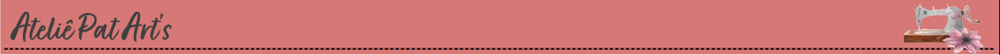

Esta página foi desenvolvida com o intuito de apresentar alguns produtos que começei a reproduzir durante a pandemia.
Ateliê PatArts surgiu de uma necessidade, pois foi um período onde tivemos que nos isolar socialmente.
Como produção inicial, tivemos as máscaras de tecido muito utilizada como proteção contra o virús.
Depois vieram outros produtos que consegui reproduzir com muito amor!